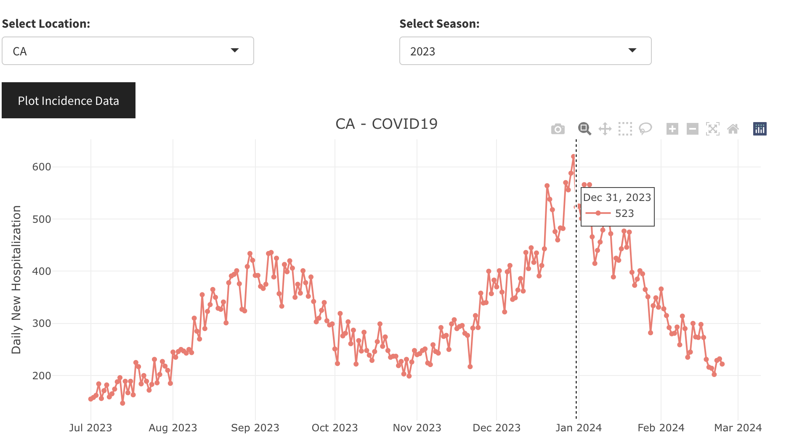
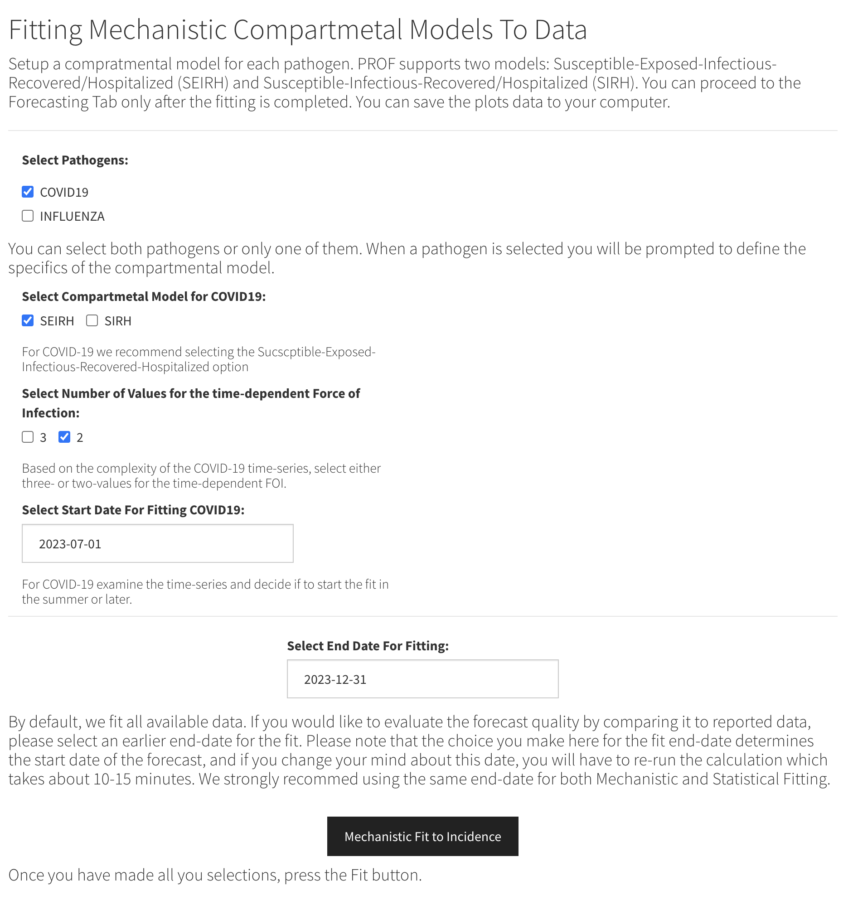
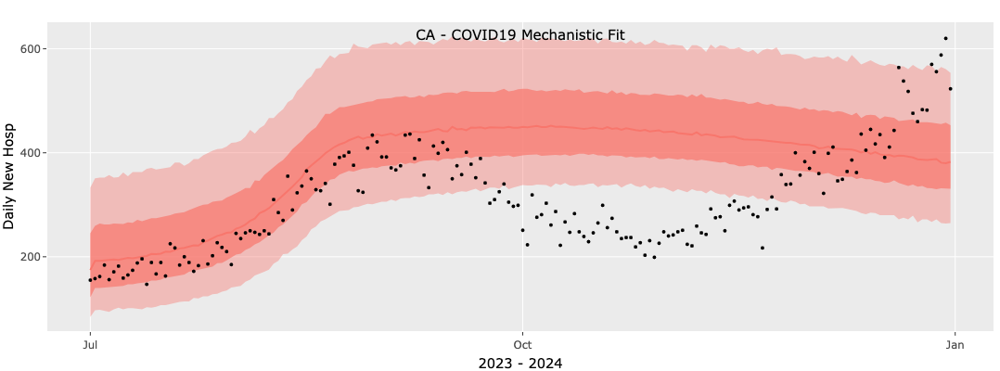
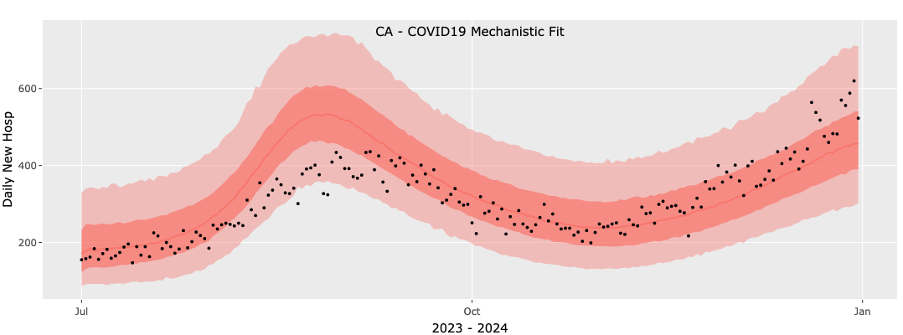
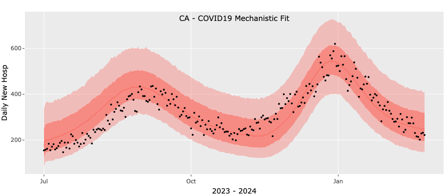
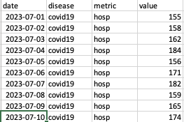

PROF Advanced Topics
The observed time-series data for both COVID-19 and influenza can be rather intricate, even within a single season. For instance, during the 2023-2024 season, many states (such as CA, FL, GA) experienced two distinct waves of COVID-19. Similarly, influenza can exhibit a dual wave attributed to different strains, e.g. influenza A and B. Whereas the PROF mechanistic framework includes only a single strain for each pathogen it does attempt to fit and forecast these complex time-series by employing a flexible time-dependent term for the force of infection. PROF uses a smoothly varying two- or three-value functional form to describe the time-dependent reproduction number, R(t) = β(t)γ where β(t) is the time-dependent transmission rate and γ is the total recovery rate. The first advanced topic we discuss is the choice of number of values for R(t), two vs. three. We illustrate this with the 2023-2024 COVID-19 time-series data for CA. We note that the example we show is somewhat extreme and not typical. It shows how a two-value fit to the data fails whereas the three-value fit is quite good. In general, we recommend starting with a two-value model and trying the three-value model only if the two-value one fails.
1. Selecting the number of values for R(t)
Suppose that we are trying to fit the CA COVID-19 time-series for 2023-2024 from July 1st, 2023 to December 31, 2023 (dashed vertical line in the figure below): the data shows a peak in the late summer/fall and the start of winter wave.

We start by selecting the SEIRH model, the two-value option for the force of infection and start and end dates of July 1, 2023 and December 2023, respectively. These choices are shown in the figure below.

The results of this fit are poor. In the figure below black circles are reported data and shaded areas are the median, 50`% and 95% confidence intervals. We see that the two value model is unable to fit the early peak and winter rise and is settling into a single broad peak. Clearly this fit would result in a poor forecast.

Given these poor results we will now repeat the fit with a three-value model and the results of this fit are shown below. We see that the more flexible three-value model improves the fit significantly although even this fit is not perfect: the rise in the second wave in the model is slower than the observed data.

We note that as the season progresses the fit with a two-value force of infection improves and is able to fit the two peaks: using one value for each peak (see below). This example demonstrates the complexity of the fits and our somewhat limited ability to control the convergence of the optimization procedure. As discussed below, our 'control knobs' are limited to the minimum and maximum values we explore in the search for optimal parameters.

To conclude, this example demonstrates the need to experiment with the mechanistic models. We suggest starting with a two-value force of infection and if the results are not-satisfactory to try and repeat the fit with a three value model. If no improvement is achieved with three values you can attempt to improve the results by adjusting the default values for the initial guess of the fitted parameters and their permissible ranges. This requires more knowledge in R and is discussed below.
2. Uploading Your Own Data
To fit and forecast your own data, you will need to provide a CSV data file containing daily or weekly hospitalization incidence data, the population size you are modeling, and a location name. The latter is only needed for display on the plots. Currently, PROF supports only the modeling of daily or weekly hospitalization data for two pathogens: COVID-19 and Influenza. Your CSV file MUST have the following columns with the following information and format specifications:
(i) column name: date. Date information in the format \%Y-\%m-\%d , e.g., 2024-10-01. Currently we support daily and weekly data
(ii) column name: disease. String with disease name. Currently we support covid19 and influenza. This information must be provided for each incidence date.
(iii) column name: metric. String with the metric of incidence. Currently, PROF only supports hosp.
(iv) columns name: value. Numeric. Non-negative incidence value.
We require the incidence data to be in long format, i.e., if you are providing data for both pathogens, list all the data for the first one followed by the data for the second one. The figure below presents an example of the expected format. The COVID-19 data is followed by the influenza data. Only a small portion of the COVID-19 data is displayed, and none of the influenza data is shown. You can download this example csv file from the link below: Download example incidence data file
Please note that PROF supports the fitting and forecasting of only ONE season at a time.

3. Creating an Ensemble Forecast
Currently this advanced option is available only when using PROF from the command line. You can download an example script that demonstrates this capability from the link below:
Download the example ensemble-forecast script
An ensemble mechanistic-statistical forecast can be generated for each pathogen and requires the following steps:
A. Select a location and a season (or upload you own incidence data file) and extract data, e.g.,
> state = "CA"
> season = 2023
> prof_data = hhs_2_PROF(hhs_path=result$download_path, season = season, state=state)
B. Select a pathogen and set start and end date for the fit, e.g.,
> disease = 'influenza'
> prof_data = hhs_set_fitdates(prof_data=prof_data, fit_start=NULL, fit_end=NULL)
C. Select a compartmental model (SIRH or SEIRH) and load default parameter file for the pathogen/model selection, e.g.,
> par_list = init_par_list(diseases=disease,
D. Fit a mechanistic model to the incidence data and display the results, e.g.,
> fit_list <- fit_data(prof_data = prof_data[disease], par_list = par_list, nb_vec=3)
> plot_fit_list <- plot_fit(prof_data = prof_data[disease], par_list = par_list,
fit_list = fit_list)
> plot_fit_list$arrange_plot
E. Repeat steps 2 and 4 for the baseline statistical model:
> prof_data = hhs_set_fitdates_stat(prof_data=prof_data[disease], fit_start=NULL, fit_end=NULL)
> stat_fit_list <- plot_stat_fit(prof_data = prof_data[disease], ntraj = 1e4, filename = NULL)
> stat_fit_list$arrange_plot
F. Create a mechanistic forecast and display the results:
> forecast_list <- plot_forecast(prof_data = prof_data[disease], par_list = par_list,
fit_list = fit_list, nfrcst = 28)
> forecast_list$arrange_plot
G. Create a statistical forecast and display the results:
> forecast_stat_list <- plot_stat_forecast(prof_data = prof_data[disease], nfrcst = 28)
> forecast_stat_list$arrange_plot
H. Combine the two forecasts to create an ensemble forecast and display the results:
> forecast_mix_list <- plot_mixed_forecast(prof_data = prof_data, forecast_list = forecast_list,
forecast_stat_list = forecast_stat_list)
> forecast_mix_list$arrange_plot
Steps A-G outline the standard procedure for performing mechanistic and statistical fits and forecasts for a single pathogen. If you anticipate creating an ensemble forecast, please ensure that the fitting and forecasting time windows have the same start and end dates for both the statistical and mechanistic models.
4. Editing the Parameter File
The fit and forecast generating functions of PROF contain default parameter values that are pathogen specific. However, the user may customize these parameters by altering the parameter list structure. The customized parameter specification can then be saved to a YAML file for later use/reference. PROF provides two methods for initializing a parameter list structure:
A. Use PROF::init_par_list(). Here is an example for working with a single disease (COVID-19), using an SEIRH model to produce hospitalizations.
> par_list1 = init_par_list(diseases=c("covid19"), models=c("seirh"))
> str(par_list1)
Here is a second example for working with two diseases (COVID-19, Influenza), using an SEIRH model for COVID-19 hospitalizations and SIRH for influenza.
> par_list2 = init_par_list(diseases=c("covid19", "influenza"),
models=c("seirh", "sirh"))
> str(par_list2)
B. Use the YAML template located in the 'parameters' directory of PROF:
> PROF/parameters/param_exmpl.yml
The YAML file can be copied and customized using a text editor, or by loading into R:
> par_list = PROF::read_par_list_yaml(file_path=".../PROF/parameters/param_exmpl.yml")
The parameter list is initialized with almost all values assigned NAs. Any disease parameter whose value remains NA when passed to PROF will have its value set by PROF::init_param(). Manually setting a parameter is straightforward. For example to set the influenza generation-time to 3.5 days:
> par_list$influenza$dis_par_ranges$par$gamma = 1/3.5
When changes are complete (if editing the list in R), the parameter list can be saved to YAML format for future reference:
> PROF::write_par_list_yaml(par_list=par_list, file_path="my_dir/test.yml")